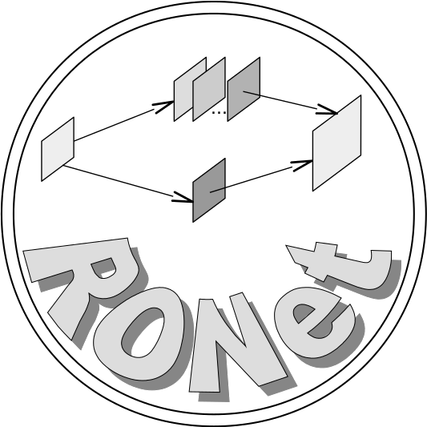

-
News!!!
[1] "Bayesian Image Super-resolution with Deep Modeling of Image Statistics" was accepted by TPAMI
[2] "Rank-One Network: An Effective Framework for Image Restoration" was accepted by TPAMI
-
Research Interests
-

Inverse problem, Tensor Completion
Deep Learning, Bayesian Neural Networks
Image Restoration, MR Image Reconstruction
-
Doing Ph.D
-
Did M.Sc